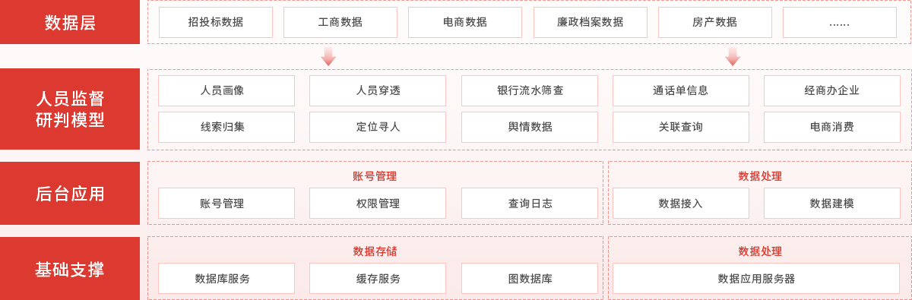

功能模块
-
线索汇总
围绕人员及社会关系、资金、经商、通话、经商办企业等多场景数据进行挖掘、线索研判，实现对有效线索按照主题、类型进行汇总，并对人员穿透、多层关联、资金、经商、通话、定位寻人等线索直观展示。 -
专线数据
家庭资产总览、家庭及旁系亲属收入支持的经济情况分析，廉政档案等数据的直观展示，家庭成员及重要社会关系及其薪资预估、家庭经商情况、家庭不动产信息（包含外地房产）、机动车、水气等登记信息。 -
银行流水筛查
实现对各类银行流水等交易流水的高效分析，实现对交易对手方身份研判、异常交易行为预警、多层交易流水穿透。帮助办案人员快速掌握资金线索。 -
通话单分析
实现对通话对手方身份的识别、社交亲密度分析、通话习惯分析等。 -
定位寻人
结合人员位置信息、银行流水、社会关系等数据，实现高频位置分析、消费场所及消费记录关联、时空交集人员研判等，可为办案人员提供常住位置分析、出入消费场所情况研判、亲密人员关联、同行同住等多项线索。 -
舆情数据
将多方舆情数据来源进行整合和处理，基于条件搜索查看信访详细内容。 -
关联查询
可发现各目标点之间人与人、人与企业、企业与企业直接的关系，辅助办案人员梳理相关企业信息线索。 -
企业线索
研判家庭及亲属经商办企业，投资及任职情况，招投标关联关系分析，以及通话资金线索研判，提供有效线索信息。 -
数据上传
数据上传统一入口，银行流水、通话单、通讯录、不动产、机动车、出行数据等一键上传。
整体架构
系统价值
审查调查平台的建设是反腐斗争的需求，是适应现代信息化发展的需要，是新的手段和工具也是规范化的需求，
通过建设智能审查调查平台，可以确保审理工作的规范化和标准化。
01
身份认证
基于人民链基础，提供了一种分布式生成、持有和验证身份标识符
DIDs和承载身份数据的凭证的机制,
使您能以加密安全、保护数据隐私并可由第三方进行机器验证。在互联网上可信地表达现实世界各种类型的身份标识和凭证。
01
身份认证
- 身份管理
- 分布式身份系统
02
身份认证
dd
02
身份认证
- 卡德罗夫看
- 打发打发
03
身份认www证
dd www
03
身份认证
- 卡德罗夫ddd看
- 是多少
03
身份认www证
dd www
03
身份认证
- 卡德罗夫ddd看
- 是多少
04
身份认www证
dd www
04
身份认证
- 卡德罗夫ddd看
- 是多少
数据安全机制
数据来源
- 公开数据:合规使用
- 纪委自有数据:合规使用
- 隐私数据:基于主体授权或公共服务
数据使用
- 立案之前，所有预警线索，均基于公开数据和纪
委自有数据。 - 立案之后，办案人员仅能查看被调查人员及被协
查人员的相关数据，不被授权的数据均不能查看。
数据授权流程
- 只有在立案之后，由纪委监委出具立案函和协查
函，数据持有方基于相应函件配合进行数据输出。
联系我们
地址：北京市朝阳区金台西路2号人民日报社新媒体大厦
电话：010-65367828
邮箱：djy@peopledata.com.cn
电话：010-65367828
邮箱：djy@peopledata.com.cn
立即咨询
Copyright © 1997-2023 by www.people.com.cn. All rights reserved
 置顶
置顶